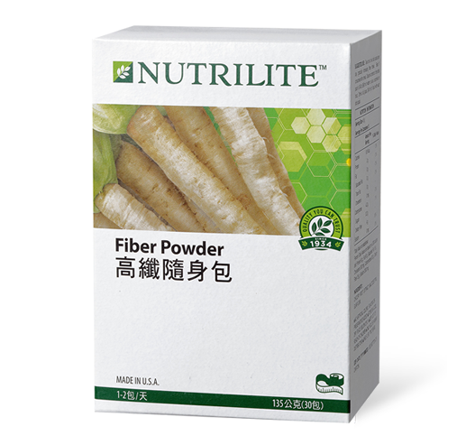

<div class="product_detail_content">
    <div class="picture">
        <div id="owl-demo" class="owl-carousel owl-theme">
            <div class="item"><span class="volume">30 包</span></div>
        </div>
    </div>
    <div class="infomation">
        <h3>高纖隨身包<br><span class="small">天然水溶性纖維，趕走油油、曲線再現</span></h3>
        <p>常在美食與S曲線之間拉鋸掙扎？高纖隨身包，內含三種優質水溶性纖維，能幫助油油快跑，讓你盡情享受美食，輕鬆擁有健康曲線！</p>
        <h4>產品特色</h4>
        <ul class="list_dot">
            <li>零脂肪，輕鬆無負擔</li>
            <li>不改變食物原味，可自由搭配，創造多元食用方式</li>
            <li>含天然水溶性纖維─菊苣萃取菁華、麥芽糊精、關華豆膠</li>
            <li>每包提供相當於80顆葡萄或1斤絲瓜的膳食纖維含量</li>
        </ul>
        <!-- <a class="download" href="pdf/products_fiber_power.pdf" target="_blank">營養成分PDF</a> -->
        <div class="btnWrap">
            <div class="showDetail">營養成分</div>
            <a class="download" href="pdf/products_fiber_power.pdf" target="_blank">下載PDF</a>
            <a class="buynow" href="https://shop.amway.com.tw/%E7%87%9F%E9%A4%8A%E4%BF%9D%E5%81%A5/%E6%A9%9F%E8%83%BD%E4%BF%9D%E5%81%A5%E7%B3%BB%E5%88%97/%E9%AB%98%E7%BA%96%E9%9A%A8%E8%BA%AB%E5%8C%85/p/2566" target="_blank">立即購買</a>
        </div>
        <div class="detailTable">
            <table class="tableizer-table">
                <thead>
                    <tr class="tableizer-firstrow">
                        <th>重要營養成分</th>
                        <th>每包含</th>
                    </tr>
                </thead>
                <tbody>
                    <tr>
                        <td>膳食纖維</td>
                        <td>4 公克</td>
                    </tr>
                </tbody>
            </table>
        </div>
    </div>
</div>
